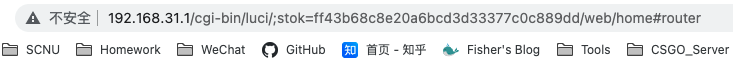
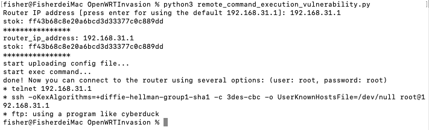
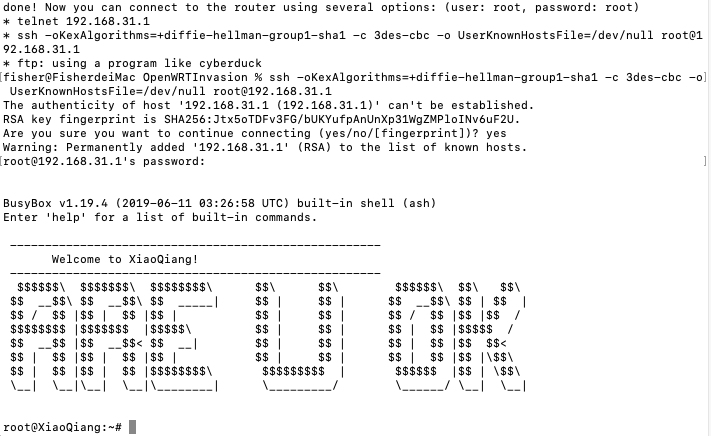
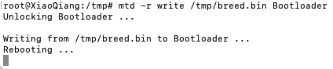
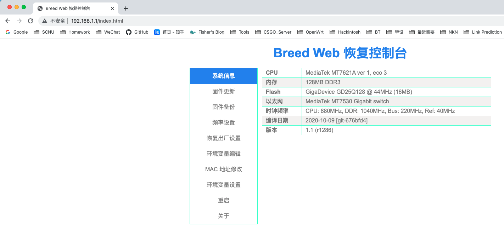
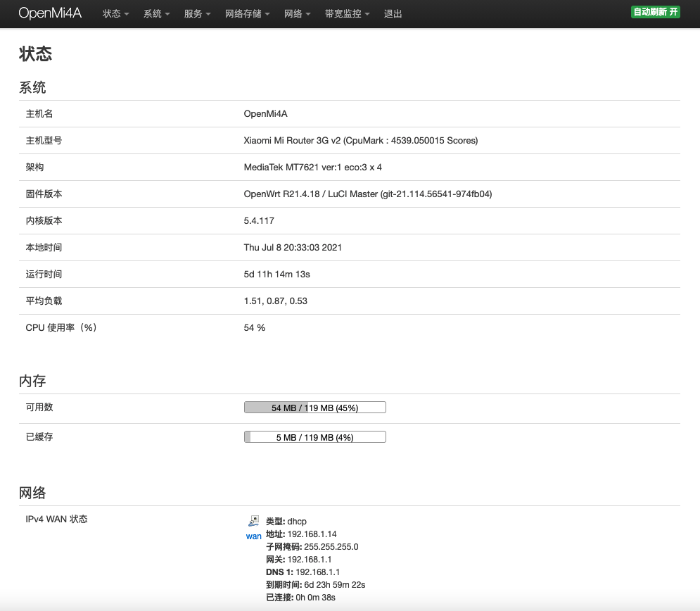

前言
在家用了一段时间的小米路由器4千兆版，使用一段时间之后就会发生网络不稳定，甚至无法连接网络等情况，怀疑是官方固件的问题。同时也有一些插件上的需求，于是就开始动手把OpenWrt固件刷入到小米路由器4千兆版中。
刷机环境
- 刷机使用的系统：macOS 11.4
- 编译OpenWrt使用的系统：Ubuntu 21.04
- 小米路由器4千兆版固件版本：MiWiFi 稳定版 2.28.58
开启SSH
开启路由器的SSH需要用到OpenWRTInvasion，首先克隆仓库，安装依赖。
1 | # 克隆仓库 |
接下来打开路由器管理界面，获取stok，stok在路由器的地址栏处，如下图所示，stok=xxxx一直到/前，那么stok就是ff43b68c8e20a6bcd3d33377c0c889dd。

运行OpenWRTInvasion中的remote_command_execution_vulnerability.py，输入路由器IP地址和stok，脚本会执行命令并开启SSH、Telnet和FTP。如果出现如下图提示，表示开启成功。

如果等了很久都没有反应，则有可能是下载busybox和dropbear时遇到了网络问题，此时需要手动修改一下busybox和dropbear的下载地址。
打开OpenWRTInvasion文件夹中的script.sh文件，找到setup_busybox()函数和start_ssh()函数中的curl命令，将其中的下载地址进行修改，这里我使用自己的服务器提供下载。
1 | # setup_busybox函数 |
再次运行OpenWRTInvasion，网络状态良好的情况下能够正常开启ssh了。复制执行脚本给出的ssh命令，输入密码root，就能够ssh登录到路由器中了。

刷入Breed
ssh登录路由器后，使用Curl下载Breed，将其重命名为breed.bin并进行md5校验，md5一致后才能刷Breed。
1 | cd /tmp/ |
使用mtd将Breed刷入Bootloader分区中，此时路由器会自动重启。
1 | mtd -r write /tmp/breed.bin Bootloader |

使用网线连接路由器，待网卡正确获取到IP为192.168.1.x的地址后，路由器电源指示灯为淡紫色，表示正常进入Breed中了。

编译OpenWrt
如果从网上下载别人编译好的固件，这一步就可以省略了，下面说说我在编译固件时踩过的坑。
- 首先是直接使用coolsnowwolf的LEDE编译出来的固件，用Breed刷入后是无法正常引导的，这里需要修改一下内存分区的源码，具体操作流程可参考恩山大佬的帖子。
- 接着是编译后的固件没有2.4g无线网卡的驱动，这个需要在编译配置中勾选
kmod-mt7603，以支持小米路由器4千兆版的2.4g无线网卡。
刷入OpenWrt
打开Breed的固件更新页面，选择要刷入的Openwrt固件，直接刷入即可。
